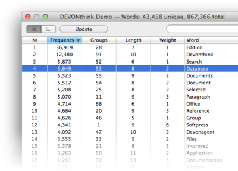

|
|
Analyze text documents |
|
With its built-in artificial intelligence (AI) functions, DEVONthink Pro Office can be used to analyze large numbers of text documents.  The Concordance function allows you to create a list of all the words contained in a database, sorted by frequency and restricted to a given length. The Search and Similar buttons open drawers that feature all documents containing words that are contextually similar to the selected word (these searches happen almost instantly). A search toolbar item lets you find any word of interest. Other functions that help you analyze documents include the AI-enhanced search function that also features a list of similar words based on spelling or contextual similarity. The See Also button lists documents with a similar content, and the topics pop-up menu displays the most important words of a document. Duplicate documents are instantly marked in blue and bold. Replicants and cross-links help you create a network of documents. Possible uses:
Continue to read here: |